Advanced water and energy balance
Miquel De Caceres
2021-07-13
Source:vignettes/AdvancedWaterEnergyBalance.Rmd
AdvancedWaterEnergyBalance.RmdAbout this vignette
This document describes how to run a water and energy balance model that uses a more detailed approach for hydraulics and stomatal regulation described in De Cáceres et al. (2021). This document is meant to teach users to run the simulation model within R. All the details of the model design and formulation can be found at https://emf-creaf.github.io/medfatebook/index.html.
Preparing model inputs
Model inputs are explained in greater detail in vignette ‘Simulation inputs’. Here we only review the different steps required to run function spwb().
Soil, vegetation, meteorology and species data
Soil information needs to be entered as a data frame with soil layers in rows and physical attributes in columns. Soil physical attributes can be initialized to default values, for a given number of layers, using function defaultSoilParams():
spar = defaultSoilParams(2)The soil input for water balance simulation is actually a list of class soil that is created using a function with the same name:
examplesoil = soil(spar)As explained in the package overview, models included in medfate were primarily designed to be ran on forest inventory plots. Here we use the example object provided with the package:
data(exampleforestMED)
exampleforestMED## $ID
## [1] "1"
##
## $patchsize
## [1] 10000
##
## $treeData
## Species N DBH Height Z50 Z95
## 1 157 168 37.55 800 750 3000
## 2 176 384 14.60 660 750 3000
##
## $shrubData
## Species Cover Height Z50 Z95
## 1 174 3.75 80 300 1500
##
## $herbCover
## [1] 10
##
## $herbHeight
## [1] 20
##
## attr(,"class")
## [1] "forest" "list"Advanced water and energy balance modeling requires daily precipitation, radiation, wind speed, min/max temparatures and relative humitidy as inputs:
## MeanTemperature MinTemperature MaxTemperature Precipitation
## 2001-01-01 3.57668969 -0.5934215 6.287950 4.869109
## 2001-01-02 1.83695972 -2.3662458 4.569737 2.498292
## 2001-01-03 0.09462563 -3.8541036 2.661951 0.000000
## 2001-01-04 1.13866156 -1.8744860 3.097705 5.796973
## 2001-01-05 4.70578690 0.3288287 7.551532 1.884401
## 2001-01-06 4.57036721 0.5461322 7.186784 13.359801
## MeanRelativeHumidity MinRelativeHumidity MaxRelativeHumidity
## 2001-01-01 78.73709 65.15411 100.00000
## 2001-01-02 69.70800 57.43761 94.71780
## 2001-01-03 70.69610 58.77432 94.66823
## 2001-01-04 76.89156 66.84256 95.80950
## 2001-01-05 76.67424 62.97656 100.00000
## 2001-01-06 89.01940 74.25754 100.00000
## Radiation WindSpeed WindDirection PET
## 2001-01-01 12.89251 2.000000 172 1.3212770
## 2001-01-02 13.03079 7.662544 278 2.2185985
## 2001-01-03 16.90722 2.000000 141 1.8045176
## 2001-01-04 11.07275 2.000000 172 0.9200627
## 2001-01-05 13.45205 7.581347 321 2.2914449
## 2001-01-06 12.84841 6.570501 141 1.7255058Finally, simulations in medfate require a data frame with species parameter values, which we load using defaults for Catalonia (NE Spain):
data("SpParamsMED")Simulation control
Apart from data inputs, the behaviour of simulation models is controlled using a set of global parameters. The default parameterization is obtained using function defaultControl():
control = defaultControl("Sperry")To use the complex soil water balance model we must change the values of transpirationMode (to switch from “Granier” to “Sperry”) and soilFunctions (to switch from Saxton’s retention curve, “SX”, to Van Genuchten’s retention curve, “VG”). This is automatically done when calling function defaultControl() with "Sperry" as parameter input.
Water balance input object
A last object is needed before calling simulation functions, called spwbInput. It consists in the compilation of aboveground and belowground parameters and the specification of additional parameter values for each plant cohort. This is done by calling function spwbInput(), but if one has a forest object, the object can be generated more directly using function forest2spwbInput():
x = forest2spwbInput(exampleforestMED, examplesoil, SpParamsMED, control)The spwbInput object for advanced water and energy balance is similar to that of simple water balance simulations, but contains more elements. Information about the cohort species is found in element cohorts (i.e. code, species and name):
x$cohorts## SP Name
## T1_157 157 Pinus halepensis
## T2_176 176 Quercus ilex
## S1_174 174 Quercus cocciferaElement canopy contains state variables within the canopy:
x$canopy## zlow zmid zup Tair Cair VPair
## 1 0 50 100 NA 386 NA
## 2 100 150 200 NA 386 NA
## 3 200 250 300 NA 386 NA
## 4 300 350 400 NA 386 NA
## 5 400 450 500 NA 386 NA
## 6 500 550 600 NA 386 NA
## 7 600 650 700 NA 386 NA
## 8 700 750 800 NA 386 NA
## 9 800 850 900 NA 386 NA
## 10 900 950 1000 NA 386 NA
## 11 1000 1050 1100 NA 386 NA
## 12 1100 1150 1200 NA 386 NA
## 13 1200 1250 1300 NA 386 NA
## 14 1300 1350 1400 NA 386 NA
## 15 1400 1450 1500 NA 386 NA
## 16 1500 1550 1600 NA 386 NA
## 17 1600 1650 1700 NA 386 NA
## 18 1700 1750 1800 NA 386 NA
## 19 1800 1850 1900 NA 386 NA
## 20 1900 1950 2000 NA 386 NA
## 21 2000 2050 2100 NA 386 NA
## 22 2100 2150 2200 NA 386 NA
## 23 2200 2250 2300 NA 386 NA
## 24 2300 2350 2400 NA 386 NA
## 25 2400 2450 2500 NA 386 NA
## 26 2500 2550 2600 NA 386 NA
## 27 2600 2650 2700 NA 386 NA
## 28 2700 2750 2800 NA 386 NACanopy temperature, water vapour pressure and \(CO_2\) concentration are state variables needed for canopy energy balance. If the canopy energy balance assumes a single canopy layer, the same values will be assumed through the canopy. Variation of within-canopy state variables is modelled if a multi-canopy energy balance is used (see control parameter multiLayerBalance).
As you may already known, element above contains the aboveground structure data that we already know:
x$above## H CR N LAI_live LAI_expanded LAI_dead
## T1_157 800 0.6605196 168.0000 1.00643723 1.006437 0
## T2_176 660 0.6055642 384.0000 0.92661573 0.000000 0
## S1_174 80 0.8032817 749.4923 0.03965932 0.000000 0Belowground parameters can be seen in below:
x$below## Z50 Z95 fineRootBiomass coarseRootSoilVolume
## T1_157 750 3000 6932.8032 16.00000
## T2_176 750 3000 3171.5535 21.00000
## S1_174 300 1500 164.5287 0.09375and in belowLayers:
x$belowLayers## $V
## 1 2
## T1_157 0.1933638 0.8066362
## T2_176 0.1933638 0.8066362
## S1_174 0.5554389 0.4445611
##
## $L
## 1 2
## T1_157 2392.0952 4266.582
## T2_176 2696.7961 4742.340
## S1_174 571.4173 1185.629
##
## $VGrhizo_kmax
## 1 2
## T1_157 41629448 61920844
## T2_176 51808686 78275281
## S1_174 253152670 73383323
##
## $VCroot_kmax
## 1 2
## T1_157 0.3944225 0.9224916
## T2_176 1.2458620 2.9554785
## S1_174 2.5460170 0.9821121
##
## $Wpool
## 1 2
## T1_157 1 1
## T2_176 1 1
## S1_174 1 1
##
## $RhizoPsi
## 1 2
## T1_157 0 0
## T2_176 0 0
## S1_174 0 0The spwbInputobject also includes cohort parameter values for several kinds of traits. For example, plant anatomy parameters are described in paramsAnatomy:
x$paramsAnatomy## Hmax Hmed Al2As SLA LeafWidth LeafDensity WoodDensity
## T1_157 1910 900 1716.262 5.348269 0.700000 0.3237865 0.6064556
## T2_176 1350 600 2481.709 6.817833 1.767436 0.5272863 0.8743066
## S1_174 250 80 6180.357 5.027918 1.376108 0.3871262 0.1713280
## FineRootDensity conduit2sapwood SRL RLD r635
## T1_157 0.3237865 0.925 3172.572 10 1.964226
## T2_176 0.5272863 0.700 4066.803 10 1.805872
## S1_174 0.3871262 0.700 4066.803 10 2.289452Parameters related to plant transpiration and photosynthesis can be seen in paramsTranspiration:
x$paramsTranspiration## Gswmin Gswmax Vmax298 Jmax298 Kmax_stemxylem Kmax_rootxylem
## T1_157 0.002031250 0.1940833 62.81613 128.8272 0.1500000 0.600000
## T2_176 0.006003126 0.2007222 39.24539 103.0690 0.7735834 3.094334
## S1_174 0.010455247 0.2830167 62.96065 119.4442 0.2900000 1.160000
## VCleaf_kmax VCleaf_c VCleaf_d VCstem_kmax VCstem_c VCstem_d
## T1_157 7.166471 1.497782 -2.142745 1.000512 7.458883 -4.481392
## T2_176 7.354306 1.331076 -1.777291 4.523779 2.558358 -5.103492
## S1_174 9.579077 1.844224 -3.030130 3.117593 3.537784 -4.126512
## VCroot_kmax VCroot_c VCroot_d VGrhizo_kmax Plant_kmax
## T1_157 1.316914 1.916254 -3.240714 103550293 0.5267656
## T2_176 4.201341 1.957824 -3.366992 130083967 1.6805362
## S1_174 3.528129 1.760307 -2.797092 326535993 1.4112516Finally, parameters related to pressure-volume curves and water storage capacity of leaf and stem organs are in paramsWaterStorage:
x$paramsWaterStorage## LeafPI0 LeafEPS LeafAF Vleaf StemPI0 StemEPS StemAF
## T1_157 -1.591429 8.918571 0.3525 0.4560549 -2.0028552 13.185187 0.925
## T2_176 -1.483333 19.260000 0.1700 0.1829250 -3.1171155 41.465622 0.700
## S1_174 -2.370000 17.230000 0.2400 0.3846097 -0.1927245 1.218936 0.700
## Vsapwood
## T1_157 2.8256658
## T2_176 1.1495998
## S1_174 0.1150416Finally, remember that one can play with plant-specific parameters for soil water balance (instead of using species-level values) by modifying manually the parameter values in this object.
Static analysis of submodels
Before using the advanced water and energy balance model, is important to understand the parameters that influence the different sub-models. Package medfate provides low-level functions corresponding to sub-models (light extinction, hydraulics, transpiration, photosynthesis…). In addition, there are several high-level plotting functions that allow examining several aspects of these processes.
Vulnerability curves
Given a spwbInput object, we can use function hydraulics_vulnerabilityCurvePlot() to inspect vulnerability curves (i.e. how hydraulic conductance of a given segment changes with the water potential) for each plant cohort and each of the different segments of the soil-plant hydraulic network: rhizosphere, roots, stems and leaves:
hydraulics_vulnerabilityCurvePlot(x, type="leaf")
hydraulics_vulnerabilityCurvePlot(x, type="stem")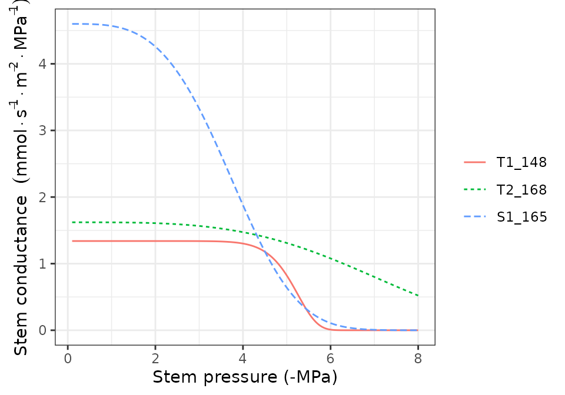
hydraulics_vulnerabilityCurvePlot(x, type="root")
hydraulics_vulnerabilityCurvePlot(x, examplesoil, type="rhizo")
The maximum values and shape of vulnerability curves for leaves and stems are regulated by parameters in paramsTranspiration. Roots have vulnerability curve parameters in the same data frame, but maximum conductance values need to be specified for each soil layer and are given in belowLayers$VCroot_kmax. Note that the last call to hydraulics_vulnerabilityCurvePlot() includes a soil object. This is because the van Genuchten parameters that define the shape of the vulnerability curve for the rhizosphere are stored in this object. Maximum conductance values in the rhizosphere are given in belowLayers$VGrhizo_kmax.
Supply functions
The vulnerability curves conformng the hydraulic network are used in the model to build the supply function, which relates water flow (i.e. transpiration) with the drop of water potential along the whole hydraulic pathway. The supply function contains not only these two variables, but also the water potential of intermediate nodes in the the hydraulic network. Function hydraulics_supplyFunctionPlot() can be used to inspect any of this variables:
hydraulics_supplyFunctionPlot(x, examplesoil, type="E")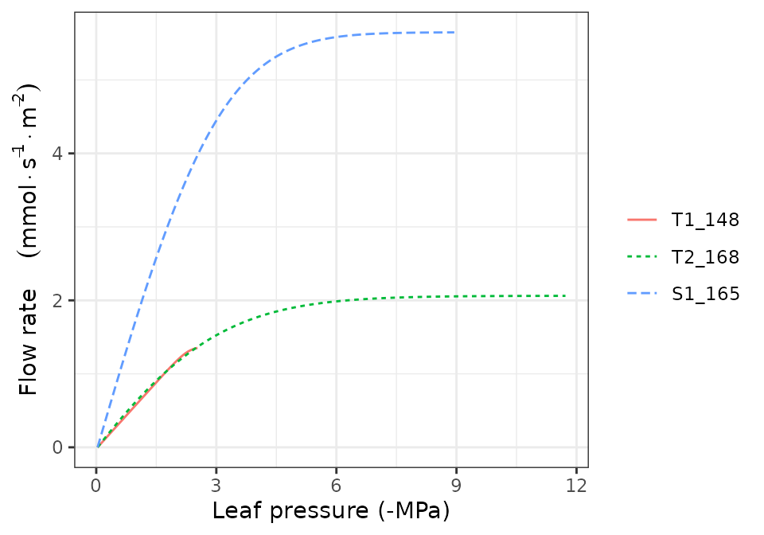
hydraulics_supplyFunctionPlot(x, examplesoil, type="ERhizo")
hydraulics_supplyFunctionPlot(x, examplesoil, type="dEdP")
hydraulics_supplyFunctionPlot(x, examplesoil, type="StemPsi")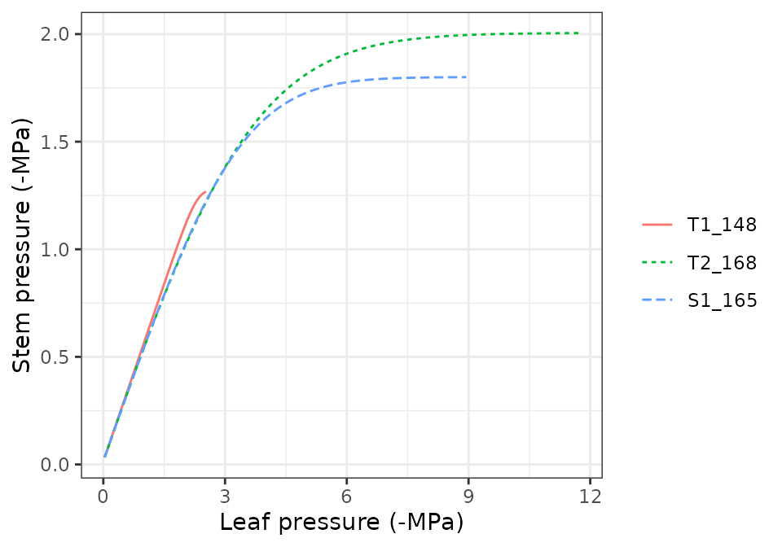
Calls to hydraulics_supplyFunctionPlot() always need both a spwbInput object and a soil object. The soil moisture state (i.e. its water potential) is the starting point for the calculation of the supply function, so different curves will be obtained for different values of soil moisture.
Stomatal regulation and photosynthesis
The soil water balance model determines stomatal conductance and transpiration separately for sunlit and shade leaves. Stomatal conductance is determined after building a photosynthesis function corresponding to the supply function and finding the value of stomatal conductance that maximizes carbon revenue while avoiding hydraulic damage (a profit-maximization approach). Given a meteorological and soil inputs and a chosen day and timestep, function transp_stomatalRegulationPlot() allows displaying the supply and photosynthesis curves for sunlit and shade leaves, along with an indication of the values corresponding to the chosen stomatal aperture:
d = 100
transp_stomatalRegulationPlot(x, examplemeteo, day = d, timestep=12,
latitude = 41.82592, elevation = 100, type="E")
transp_stomatalRegulationPlot(x, examplemeteo, day = d, timestep=12,
latitude = 41.82592, elevation = 100, type="An")
transp_stomatalRegulationPlot(x, examplemeteo, day = d, timestep=12,
latitude = 41.82592, elevation = 100, type="Gsw")
transp_stomatalRegulationPlot(x, examplemeteo, day = d, timestep=12,
latitude = 41.82592, elevation = 100, type="T")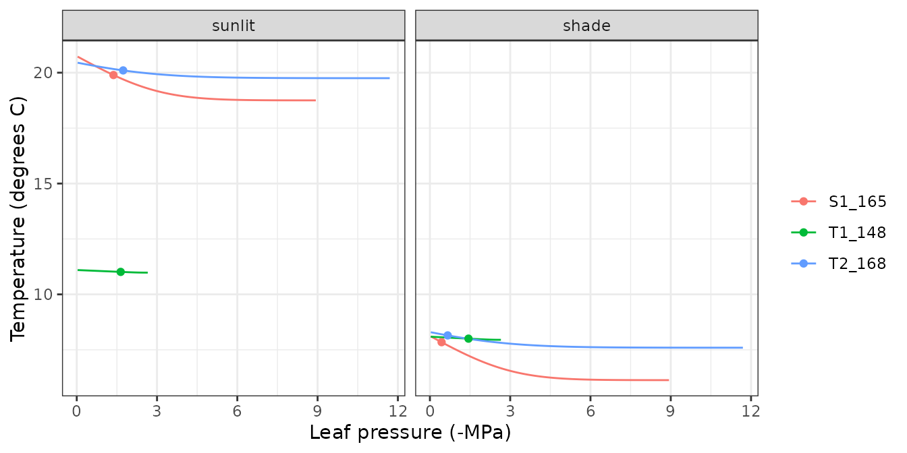
transp_stomatalRegulationPlot(x, examplemeteo, day = d, timestep=12,
latitude = 41.82592, elevation = 100, type="VPD")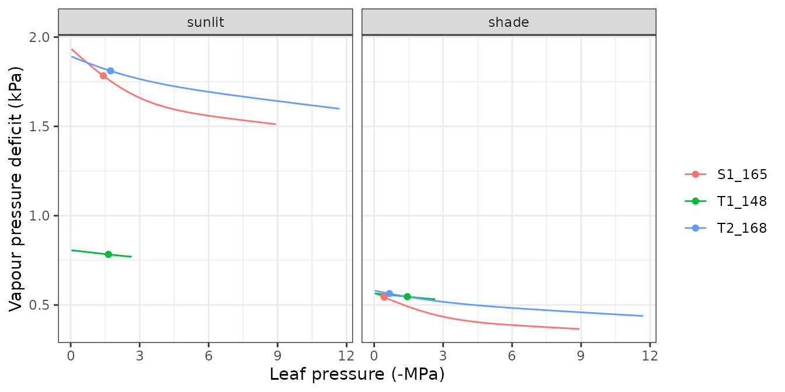
Pressure volume curves
moisture_pressureVolumeCurvePlot(x, segment="leaf", fraction="symplastic")
moisture_pressureVolumeCurvePlot(x, segment="leaf", fraction="apoplastic")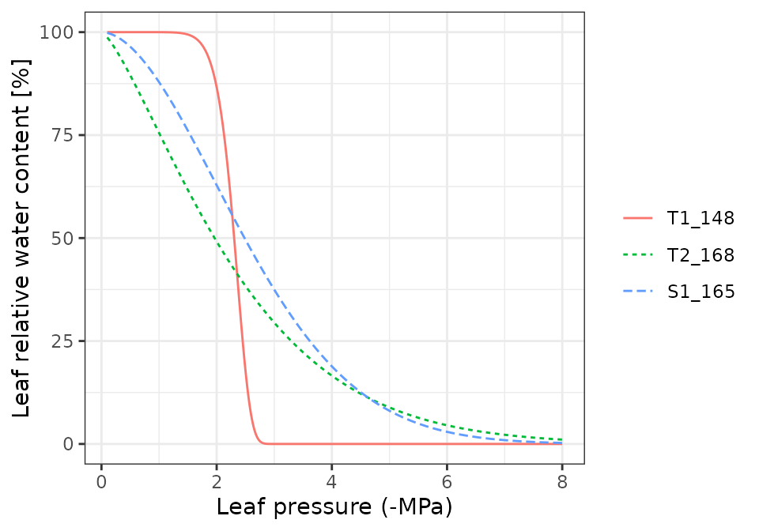
moisture_pressureVolumeCurvePlot(x, segment="stem", fraction="symplastic")
moisture_pressureVolumeCurvePlot(x, segment="stem", fraction="apoplastic")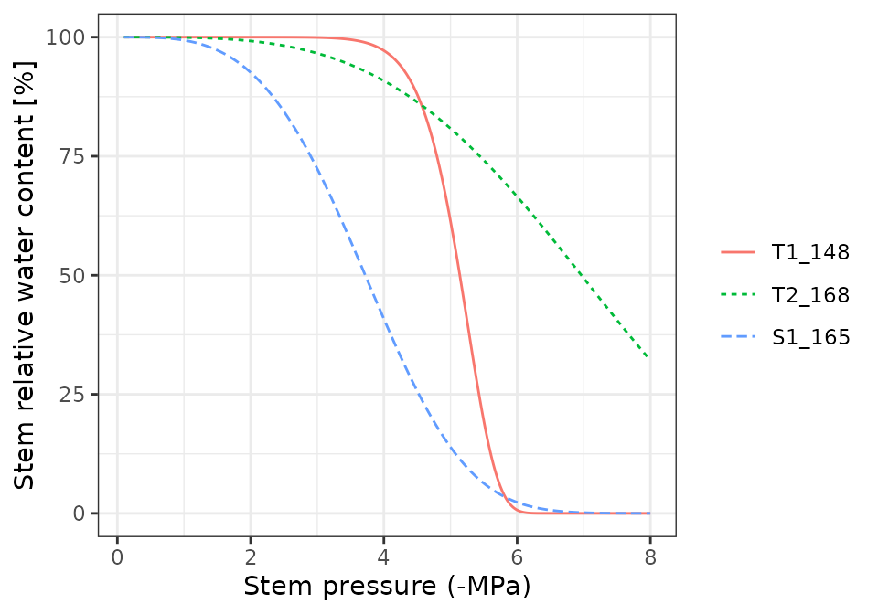
Water balance for a single day
Running the model
Soil water balance simulations will normally span periods of several months or years, but since the model operates at a daily and subdaily temporal scales, it is possible to perform soil water balance for one day only. This is done using function spwb_day(). In the following code we select the same day as before from the meteorological input data and perform soil water balance for that day only:
sd1<-spwb_day(x, rownames(examplemeteo)[d],
examplemeteo$MinTemperature[d], examplemeteo$MaxTemperature[d],
examplemeteo$MinRelativeHumidity[d], examplemeteo$MaxRelativeHumidity[d],
examplemeteo$Radiation[d], examplemeteo$WindSpeed[d],
latitude = 41.82592, elevation = 100,
slope= 0, aspect = 0, prec = examplemeteo$Precipitation[d])The output of spwb_day() is a list with several elements:
names(sd1)## [1] "cohorts" "WaterBalance" "EnergyBalance" "Soil"
## [5] "Stand" "Plants" "RhizoPsi" "SunlitLeaves"
## [9] "ShadeLeaves" "ExtractionInst" "PlantsInst" "SunlitLeavesInst"
## [13] "ShadeLeavesInst" "LightExtinction" "LWRExtinction" "CanopyTurbulence"Water balance output
Element WaterBalance contains the soil water balance flows of the day (precipitation, infiltration, transpiration, …)
sd1$WaterBalance## PET Rain Snow
## 5.0233468 0.0000000 0.0000000
## NetRain Snowmelt Runon
## 0.0000000 0.0000000 0.0000000
## Infiltration Runoff DeepDrainage
## 0.0000000 0.0000000 0.0000000
## SoilEvaporation PlantExtraction Transpiration
## 0.5000000 0.2873266 0.2873266
## HydraulicRedistribution
## 0.0000000And Soil contains water evaporated from each soil layer, water transpired from each soil layer and the final soil water potential:
sd1$Soil## SoilEvaporation HydraulicInput HydraulicOutput PlantExtraction psi
## 1 4.999998e-01 0 0.08567464 0.08567464 -0.03453066
## 2 1.529512e-07 0 0.20165193 0.20165193 -0.03327137Soil and canopy energy balance
Element EnergyBalance contains subdaily variation in atmosphere, canopy and soil temperatures, as well as canopy and soil energy balance components.
names(sd1$EnergyBalance)## [1] "Temperature" "CanopyEnergyBalance" "SoilEnergyBalance"
## [4] "TemperatureLayers" "VaporPressureLayers"Package medfate provides a plot function for objects of class spwb_day that can be used to inspect the results of the simulation. We use this function to display subdaily dynamics in plant, soil and canopy variables. For example, we can use it to display temperature variations (only the temperature of the topmost soil layer is drawn):
plot(sd1, type = "Temperature")
plot(sd1, type = "CanopyEnergyBalance")
plot(sd1, type = "SoilEnergyBalance")
Plant output
Element Plants contains output values by plant cohort. Several output variables can be inspected in this element.
sd1$Plants## LAI Extraction Transpiration GrossPhotosynthesis NetPhotosynthesis
## T1_157 1.006437 0.2873266 0.2873266 2.275798 2.12552
## T2_176 0.000000 0.0000000 0.0000000 0.000000 0.00000
## S1_174 0.000000 0.0000000 0.0000000 0.000000 0.00000
## RootPsi StemPsi StemPLC LeafPsiMin LeafPsiMax dEdP
## T1_157 -0.55609740 -0.89586149 1.229325e-06 -1.38890319 -0.04744782 0.3404691
## T2_176 -0.03338608 -0.03338608 0.000000e+00 -0.03338608 -0.03338608 0.0000000
## S1_174 -0.03393955 -0.03393955 0.000000e+00 -0.03393955 -0.03393955 0.0000000
## DDS StemRWC LeafRWC StemSympRWC LeafSympRWC WaterBalance
## T1_157 0.04304872 0.9981382 0.9118023 0.9751908 0.9465707 -1.084202e-18
## T2_176 0.00000000 0.9997729 0.9978057 0.9992489 0.9983856 0.000000e+00
## S1_174 0.00000000 0.9927671 0.9986166 0.9758903 0.9982595 0.000000e+00While Plants contains one value per cohort and variable that summarizes the whole simulated day, information by disaggregated by time step can be accessed in PlantsInst. Moreover, we can use function plot.spwb_day() to draw plots of sub-daily variation per species of plant transpiration per ground area (L·m\(^{-2}\)), transpiration per leaf area (also in L·m\(^{-2}\)), plant net photosynthesis (in g C·m\(^{-2}\)), and plant water potential (in MPa):
plot(sd1, type = "PlantTranspiration", bySpecies = T)
plot(sd1, type = "TranspirationPerLeaf", bySpecies = T)## Warning: Removed 48 row(s) containing missing values (geom_path).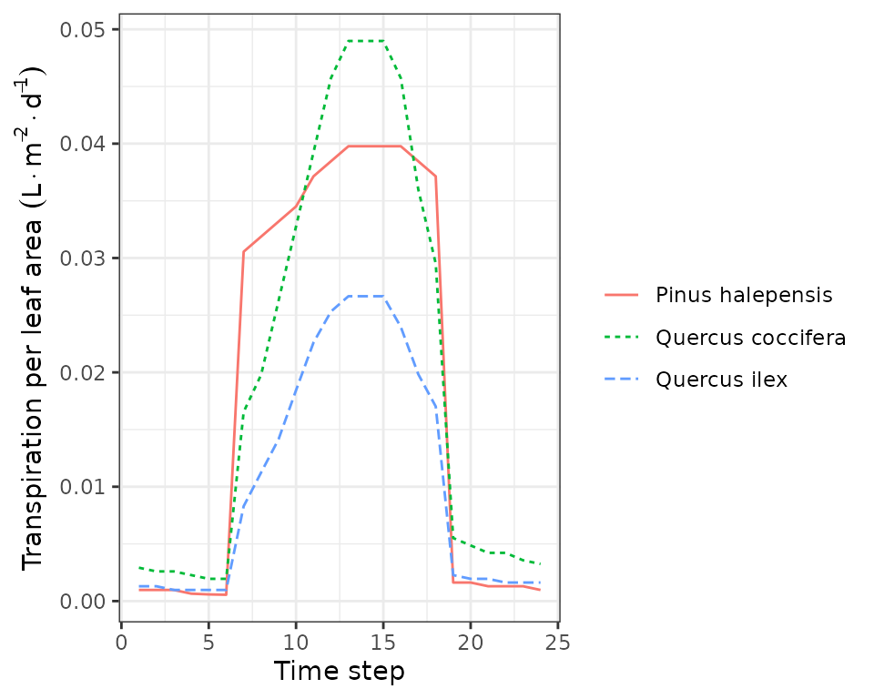
plot(sd1, type = "NetPhotosynthesis", bySpecies = T)## Warning: Removed 48 row(s) containing missing values (geom_path).
plot(sd1, type = "LeafPsiAverage", bySpecies = T)## Warning: Removed 48 row(s) containing missing values (geom_path).
Output for sunlit and shade leaves
The model distinguishes between sunlit and shade leaves for stomatal regulation. Static properties of sunlit and shade leaves, for each cohort, can be accessed via:
sd1$SunlitLeaves## LAI Vmax298 Jmax298 LeafPsiMin LeafPsiMax GSWMin GSWMax
## T1_157 0.587488 46.99537 96.381 -1.693764 -0.04744782 0.00205799 0.08154347
## T2_176 0.000000 NaN NaN 0.000000 0.00000000 0.00000000 0.00000000
## S1_174 0.000000 NaN NaN 0.000000 0.00000000 0.00000000 0.00000000
## TempMin TempMax
## T1_157 2.747897 15.71633
## T2_176 0.000000 0.00000
## S1_174 0.000000 0.00000
sd1$ShadeLeaves## LAI Vmax298 Jmax298 LeafPsiMin LeafPsiMax GSWMin
## T1_157 0.4189492 41.90182 85.93484 -1.034687 -0.04744782 0.002046092
## T2_176 0.0000000 NaN NaN 0.000000 0.00000000 0.000000000
## S1_174 0.0000000 NaN NaN 0.000000 0.00000000 0.000000000
## GSWMax TempMin TempMax
## T1_157 0.06514387 2.4473 11.50687
## T2_176 0.00000000 0.0000 0.00000
## S1_174 0.00000000 0.0000 0.00000Instantaneous values are also stored for sunlit and shade leaves. We can also use the plot function for objects of class spwb_day to draw instantaneous variations in temperature for sunlit and shade leaves:
plot(sd1, type = "LeafTemperature", bySpecies=TRUE)## Warning: Removed 96 row(s) containing missing values (geom_path).
Note that sunlit leaves of some species reach temperatures higher than the canopy. We can also plot variations in instantaneous gross and net photosynthesis rates:
plot(sd1, type = "LeafGrossPhotosynthesis", bySpecies=TRUE)## Warning: Removed 96 row(s) containing missing values (geom_path).
plot(sd1, type = "LeafNetPhotosynthesis", bySpecies=TRUE)## Warning: Removed 96 row(s) containing missing values (geom_path).
Or variations in stomatal conductance:
plot(sd1, type = "LeafStomatalConductance", bySpecies=TRUE)## Warning: Removed 96 row(s) containing missing values (geom_path).
Or variations in vapour pressure deficit:
plot(sd1, type = "LeafVPD", bySpecies=TRUE)## Warning: Removed 96 row(s) containing missing values (geom_path).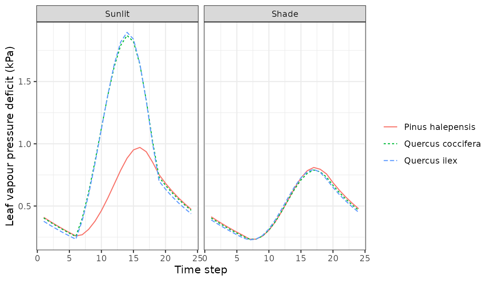
Or variations in leaf water potential:
plot(sd1, type = "LeafPsi", bySpecies=TRUE)## Warning: Removed 96 row(s) containing missing values (geom_path).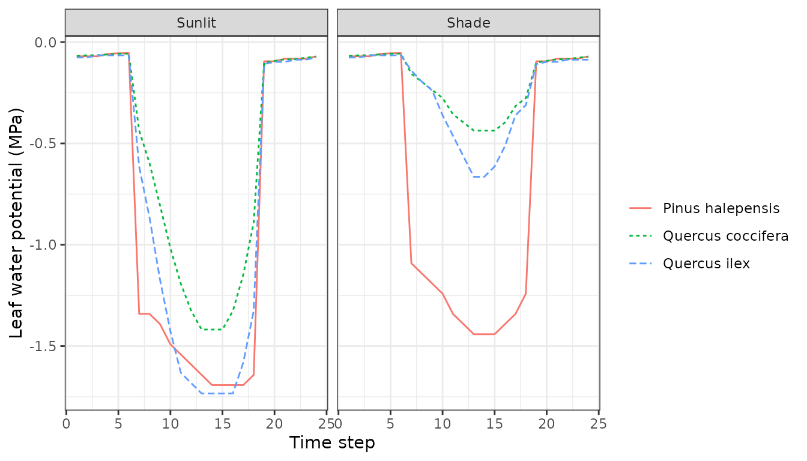
plot(sd1, type = "LeafCi", bySpecies=TRUE)## Warning: Removed 96 row(s) containing missing values (geom_path).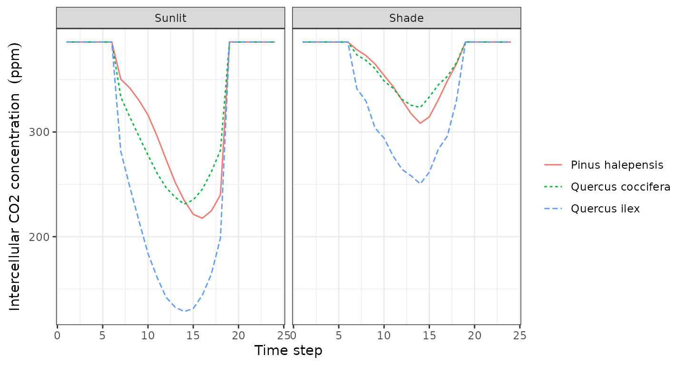
plot(sd1, type = "LeafIntrinsicWUE", bySpecies=TRUE)## Warning: Removed 96 row(s) containing missing values (geom_path).
Water balance for multiple days
Running the model
Users will often use function spwb() to run the soil water balance model for several days. This function requires the spwbInput object, the soil object and the meteorological data frame. However, running spwb_day() modified the input objects. In particular, the soil moisture at the end of the simulation was:
x$soil$W## [1] 0.9908718 0.9982714And the temperature of soil layers:
x$soil$Temp## [1] 9.185445 7.996657We can also see the current state of canopy variables:
x$canopy## zlow zmid zup Tair Cair VPair
## 1 0 50 100 6.24811 386 0.5170718
## 2 100 150 200 6.24811 386 0.5170718
## 3 200 250 300 6.24811 386 0.5170718
## 4 300 350 400 6.24811 386 0.5170718
## 5 400 450 500 6.24811 386 0.5170718
## 6 500 550 600 6.24811 386 0.5170718
## 7 600 650 700 6.24811 386 0.5170718
## 8 700 750 800 6.24811 386 0.5170718
## 9 800 850 900 6.24811 386 0.5170718
## 10 900 950 1000 6.24811 386 0.5170718
## 11 1000 1050 1100 6.24811 386 0.5170718
## 12 1100 1150 1200 6.24811 386 0.5170718
## 13 1200 1250 1300 6.24811 386 0.5170718
## 14 1300 1350 1400 6.24811 386 0.5170718
## 15 1400 1450 1500 6.24811 386 0.5170718
## 16 1500 1550 1600 6.24811 386 0.5170718
## 17 1600 1650 1700 6.24811 386 0.5170718
## 18 1700 1750 1800 6.24811 386 0.5170718
## 19 1800 1850 1900 6.24811 386 0.5170718
## 20 1900 1950 2000 6.24811 386 0.5170718
## 21 2000 2050 2100 6.24811 386 0.5170718
## 22 2100 2150 2200 6.24811 386 0.5170718
## 23 2200 2250 2300 6.24811 386 0.5170718
## 24 2300 2350 2400 6.24811 386 0.5170718
## 25 2400 2450 2500 6.24811 386 0.5170718
## 26 2500 2550 2600 6.24811 386 0.5170718
## 27 2600 2650 2700 6.24811 386 0.5170718
## 28 2700 2750 2800 6.24811 386 0.5170718We simply use function resetInputs() to reset state variables to their default values, so that the new simulation is not affected by the end state of the previous simulation:
resetInputs(x)
x$soil$W## [1] 1 1
x$soil$Temp## [1] NA NA
x$canopy## zlow zmid zup Tair Cair VPair
## 1 0 50 100 NA 386 NA
## 2 100 150 200 NA 386 NA
## 3 200 250 300 NA 386 NA
## 4 300 350 400 NA 386 NA
## 5 400 450 500 NA 386 NA
## 6 500 550 600 NA 386 NA
## 7 600 650 700 NA 386 NA
## 8 700 750 800 NA 386 NA
## 9 800 850 900 NA 386 NA
## 10 900 950 1000 NA 386 NA
## 11 1000 1050 1100 NA 386 NA
## 12 1100 1150 1200 NA 386 NA
## 13 1200 1250 1300 NA 386 NA
## 14 1300 1350 1400 NA 386 NA
## 15 1400 1450 1500 NA 386 NA
## 16 1500 1550 1600 NA 386 NA
## 17 1600 1650 1700 NA 386 NA
## 18 1700 1750 1800 NA 386 NA
## 19 1800 1850 1900 NA 386 NA
## 20 1900 1950 2000 NA 386 NA
## 21 2000 2050 2100 NA 386 NA
## 22 2100 2150 2200 NA 386 NA
## 23 2200 2250 2300 NA 386 NA
## 24 2300 2350 2400 NA 386 NA
## 25 2400 2450 2500 NA 386 NA
## 26 2500 2550 2600 NA 386 NA
## 27 2600 2650 2700 NA 386 NA
## 28 2700 2750 2800 NA 386 NANow we are ready to call function spwb(). In this example, we only simulate 61 days to save computational time:
S = spwb(x, examplemeteo[110:170,], latitude = 41.82592, elevation = 100)## Initial soil water content (mm): 180.814
## Initial snowpack content (mm): 0
## Performing daily simulations
## Year 2001:......done.
## Final soil water content (mm): 158.624
## Final snowpack content (mm): 0
## Change in soil water content (mm): -22.1896
## Soil water balance result (mm): -22.1896
## Change in snowpack water content (mm): 0
## Snowpack water balance result (mm): 0
## Water balance components:
## Precipitation (mm) 36
## Rain (mm) 26 Snow (mm) 10
## Interception (mm) 4 Net rainfall (mm) 21
## Infiltration (mm) 31 Runoff (mm) 0 Deep drainage (mm) 25
## Soil evaporation (mm) 5 Transpiration (mm) 23
## Plant extraction from soil (mm) 23 Plant water balance (mm) 0 Hydraulic redistribution (mm) 0Function spwb() returns an object of class spwb. If we inspect its elements, we realize that the output is arranged differently than in spwb_day():
names(S)## [1] "latitude" "topography" "spwbInput"
## [4] "WaterBalance" "EnergyBalance" "Temperature"
## [7] "TemperatureLayers" "Soil" "Stand"
## [10] "Plants" "SunlitLeaves" "ShadeLeaves"
## [13] "subdaily"In particular, element spwbInput contains a copy of the input parameters that were used to run the model:
names(S$spwbInput)## [1] "control" "soil" "canopy"
## [4] "cohorts" "above" "below"
## [7] "belowLayers" "paramsPhenology" "paramsAnatomy"
## [10] "paramsInterception" "paramsTranspiration" "paramsWaterStorage"
## [13] "internalPhenology" "internalWater"As before, WaterBalance contains water balance components, but in this case in form of a data frame with days in rows:
head(S$WaterBalance)## PET Precipitation Rain Snow NetRain Snowmelt
## 2001-04-20 2.641801 2.1625135 0.0000000 2.162513 0.00000000 0.000000
## 2001-04-21 1.875251 3.7992356 0.0000000 3.799236 0.00000000 0.000000
## 2001-04-22 2.903129 4.1962782 0.0000000 4.196278 0.00000000 2.135650
## 2001-04-23 3.633982 1.4698434 1.4698434 0.000000 0.88864031 8.022377
## 2001-04-24 3.891957 0.1538991 0.1538991 0.000000 0.09304456 0.000000
## 2001-04-25 4.171116 0.1317847 0.1317847 0.000000 0.07967460 0.000000
## Infiltration Runoff DeepDrainage Evapotranspiration Interception
## 2001-04-20 0.00000000 0 0.0000000 0.1404533 0.00000000
## 2001-04-21 0.00000000 0 0.0000000 0.1370811 0.00000000
## 2001-04-22 2.13565015 0 1.4739337 0.1628182 0.00000000
## 2001-04-23 8.91101747 0 7.2441797 1.2782629 0.58120313
## 2001-04-24 0.09304456 0 1.4077206 0.5806587 0.06085453
## 2001-04-25 0.07967460 0 0.1356369 0.5541316 0.05211009
## SoilEvaporation PlantExtraction Transpiration
## 2001-04-20 0.0000000 0.1404533 0.1404533
## 2001-04-21 0.0000000 0.1370811 0.1370811
## 2001-04-22 0.0000000 0.1628182 0.1628182
## 2001-04-23 0.5000000 0.1970598 0.1970598
## 2001-04-24 0.2099341 0.3098700 0.3098700
## 2001-04-25 0.1540059 0.3480156 0.3480156
## HydraulicRedistribution
## 2001-04-20 0.000000e+00
## 2001-04-21 0.000000e+00
## 2001-04-22 0.000000e+00
## 2001-04-23 1.749974e-04
## 2001-04-24 6.313823e-06
## 2001-04-25 0.000000e+00Elements Plants is itself a list with several elements that contain daily output results by plant cohorts, for example leaf minimum (midday) water potentials are:
head(S$Plants$LeafPsiMin)## T1_157 T2_176 S1_174
## 2001-04-20 -0.6658485 -0.03300000 -0.03300000
## 2001-04-21 -0.6455839 -0.03312481 -0.03311431
## 2001-04-22 -0.8570124 -0.03264055 -0.03285776
## 2001-04-23 -1.0382119 -0.03167100 -0.03326086
## 2001-04-24 -1.3085054 -0.03320203 -0.03419150
## 2001-04-25 -1.4799938 -0.03366438 -0.03468467Plotting and summarizing results
Package medfate also provides a plot function for objects of class spwb. It can be used to show the meteorological input. Additionally, it can also be used to draw soil and plant variables. In the code below we draw water fluxes, soil water potentials, plant transpiration and plant (mid-day) water potential:
plot(S, type="Evapotranspiration")
plot(S, type="SoilPsi", bySpecies = TRUE)
plot(S, type="PlantTranspiration", bySpecies = TRUE)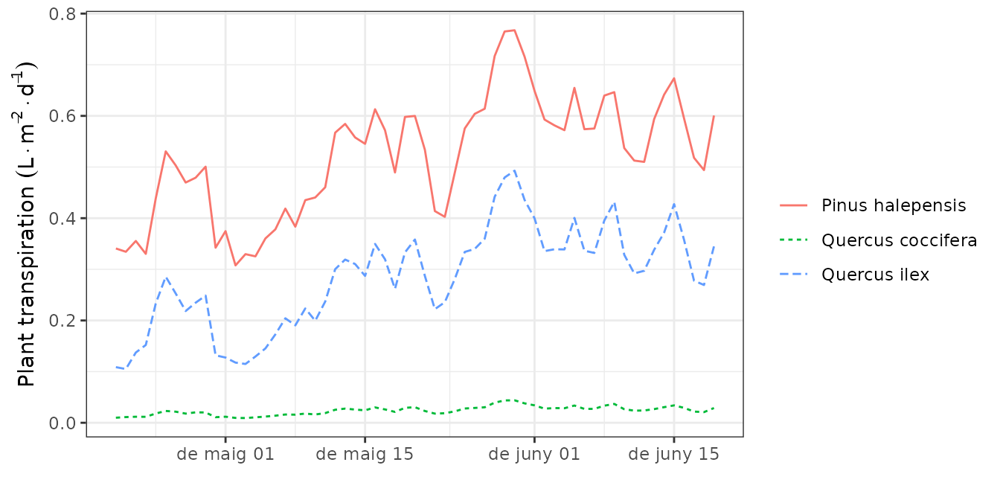
plot(S, type="LeafPsiMin", bySpecies = TRUE)## Warning: Removed 98 row(s) containing missing values (geom_path).
While the simulation model uses daily steps, users may be interested in outputs at larger time scales. The package provides a summary for objects of class spwb. This function can be used to summarize the model’s output at different temporal steps (i.e. weekly, annual, …). For example, to obtain the average soil moisture and water potentials by months one can use:
summary(S, freq="months",FUN=mean, output="Soil")## W.1 W.2 ML.1 ML.2 MLTot WTD SWE
## 2001-04-01 0.9880225 0.9989028 63.39231 116.5250 179.9173 997.0313 1.467876
## 2001-05-01 0.9613607 0.9783624 61.68166 114.1289 175.8105 998.3447 0.000000
## 2001-06-01 0.8978596 0.9114256 57.60739 106.3205 163.9279 1000.0000 0.000000
## PlantExt.1 PlantExt.2 HydraulicInput.1 HydraulicInput.2 psi.1
## 2001-04-01 0.07370447 0.1745407 1.648284e-05 0 -0.03554050
## 2001-05-01 0.10642467 0.2528895 9.116318e-06 0 -0.04065522
## 2001-06-01 0.14806034 0.3506224 3.229317e-06 0 -0.05655932
## psi.2
## 2001-04-01 -0.03333797
## 2001-05-01 -0.03704300
## 2001-06-01 -0.05125922Parameter output is used to indicate the element of the spwb object for which we desire summaries. Similarly, it is possible to calculate the average stress of plant cohorts by months:
summary(S, freq="months",FUN=mean, output="PlantStress")## T1_157 T2_176 S1_174
## 2001-04-01 0.03446150 0.000000000 0.00000000
## 2001-05-01 0.05042729 0.000000000 0.00000000
## 2001-06-01 0.06590681 0.005218579 0.00254478The summary function can be also used to aggregate the output by species. In this case, the values of plant cohorts belonging to the same species will be averaged using LAI values as weights. For example, we may average the daily drought stress across cohorts of the same species (here there is only one cohort by species, so this does not modify the output):
## Pinus halepensis Quercus coccifera Quercus ilex
## 2001-04-20 0.01714144 NA NA
## 2001-04-21 0.01841210 NA NA
## 2001-04-22 0.02110329 NA NA
## 2001-04-23 0.02371806 NA NA
## 2001-04-24 0.03916279 NA NA
## 2001-04-25 0.05134232 NA NAOr we can combine the aggregation by species with a temporal aggregation (here monthly averages):
summary(S, freq="month", FUN = mean, output="PlantStress", bySpecies = TRUE)## Pinus halepensis Quercus coccifera Quercus ilex
## 2001-04-01 0.03446150 NA NA
## 2001-05-01 0.05042729 NA NA
## 2001-06-01 0.06590681 NA NA